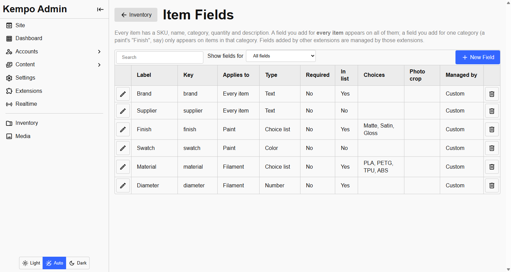
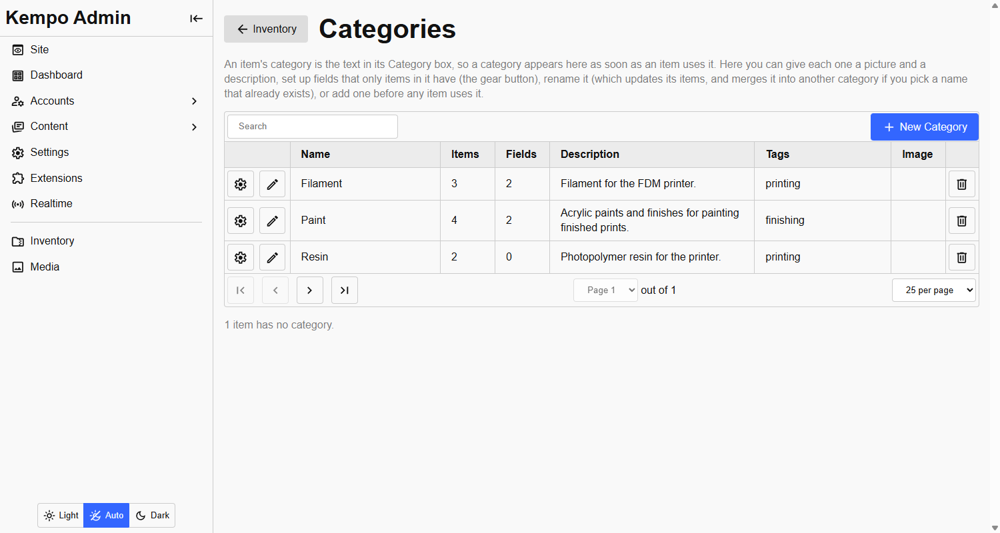

Fields and categories
Custom fields
Users in the kempo-inventory:admin group add fields under Inventory > Fields. Each has a label, a key (made from the label, and fixed once created), a kind, and whether it is required and shown in the item list. The item list, its filters and the item form are all built from the field list, so adding a field changes all three at once.

The Fields page. Brand and Supplier are for every item. Finish and Swatch belong to Paint, and Material and Diameter to Filament.| Kind | Holds |
|---|---|
| Short text | Up to 1,000 characters |
| Long text | Up to 20,000 characters |
| Number | Any number |
| Yes / no | A switch |
| Date | A date (YYYY-MM-DD) |
| Rating | A whole number of stars, 1 to 5, chosen with kempo-ui's star rating |
| Colour | A hex colour, such as #ff8800, chosen with kempo-ui's colour picker. It can be cleared |
| Choice list | One of a list you define |
| Item link | A link to another item, for things that are related in some way |
| Photos / files | Up to 20 per field. Only available when a media library is installed |
Every choice-list field gets a filter on the item list, and search covers custom values too. A field's kind can only be changed where nothing can be lost: a choice list can become free text, and short text can become long text. Anything else is refused, because existing values could be orphaned. Delete the field and make a new one instead. Deleting a field removes its value from every item.
Suggested values
Switch on Suggest values already used for a short-text field and, as you type, the form offers matching values from other items, and the most used ones the moment the field is focused. That keeps repeated entries such as a brand consistent: vallejo and Vallejo count as one suggestion, shown the way it is most often written. It is only a suggestion. Anything new can still be typed.
Fields for one category
A field applies either to every item (the default) or to one category. Make a paint's "Finish" (Matte, Satin, Gloss) for the Paint category and it only appears on items in Paint. Filament can have its own "Diameter" and nothing else sees it. Choose what a field Applies to when you create it, or use the gear button beside a category on the Categories page.
- A key is unique within its category, so two categories can each have a "finish". A category cannot reuse a key that a default field has, and the other way round, because both would be stored under the same name.
- Moving an item to another category keeps the values it held for fields it no longer shows. They are hidden, not deleted, and come back if the item returns.
- Renaming a category takes its fields with it. A category that still has fields cannot be deleted.
A field is either custom (you manage it) or owned by an extension. For an owned field you can rename it and choose whether it shows in the list, but only the extension can delete it or change what it holds.
Categories
A category is a built-in, optional property of every item, like its SKU. It is free text (up to 100 characters) and the item form suggests categories already in use. Categories are not a list you maintain: they are the distinct values in use, matched ignoring case and spacing, so Paint, paint and Paint are one category.
What the extension adds is a small record per category with a description, tags and an image.

The Categories page. The gear button opens a category's own fields.- Create one before any item uses it, edit its description and image, rename it, or delete it.
- Renaming updates every item in it. Renaming onto an existing name merges the two.
- A category that items still use cannot be deleted.
- The image needs a media library. See Photos and files.
import { getCategories, saveCategory, deleteCategory } from 'kempo-inventory/sdk'; // on the server
import { getCategories, saveCategory, deleteCategory } from '/inventory/sdk.js'; // in the browser
const [, data] = await getCategories({ includeEmpty: true });
// { uncategorised: 2, categories: [{ name: 'Paint', key: 'paint', count: 7, description, image }] }
await saveCategory('Paint', { description: 'Hobby paints' }); // only what you pass changes
await saveCategory('Paint', { newName: 'Paints' }); // renames, and updates the items
await deleteCategory('Paint'); // refused (409) while items use itkempo-inventory is open source under the MIT license. View it on GitHub, or report a problem.